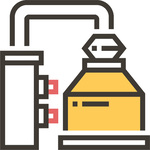
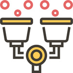
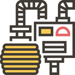
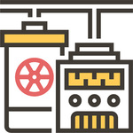
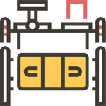
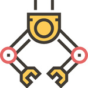
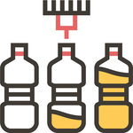
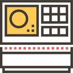
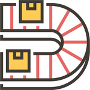
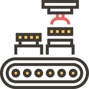

HOME > 코카콜라 스토리 > 제조과정
제조과정
세계 최고 음료브랜드 코카-콜라의 제조과정을 만나보세요!
-

- 1. 물처리
- 코카-콜라 제품에 사용되는 물을 처리하는 과정입니다. 수질과 물의 특성은 장소에 따라 다르기 때문에 정확한 기준을 충족시키기 위해 국내 먹는 물 기준보다 엄격한 기준으로 처리, 검사되어 어느 지역에서 제공되든지 간에 동일한 맛을 가질 수 있도록 합니다.
-
- 2. 필터링
- 물을 처리하는 과정에서 기준을 통과된 물은 모래와 활성 단소 필터를 통해 화학적 처리를 하는 과정입니다. 필터링 프로세스는 대개 화학적 처리를 필요하고 있으며 모래와 활성 탄 필터를 통해 여과됩니다.
-

- 3. 감미료 혼합
- 코카-콜라 제조를 위해 쓰이는 고과당전분시럽, 자당과 같은 설탕 혹은 저칼로리 감미료를 처리된 물과 혼합하는 과정입니다.
-
- 4. 원액
- 제조 프로세스는 원액에서 시작됩니다. 이는 전세계에 있는 공장에서 제조됩니다. 코카-콜라 제품의 원액이 첨가 되는 과정으로 코카-콜라의 원액은 전세계 공장에서 제조되고 있으며 한국에서 만들어지는 모든 코카-콜라 제품은 한국에서 만들어진 원액을 사용합니다. 코카-콜라 제품의 특유의 고유한 맛과 상쾌함을 지키기 위해 원액의 정확한 원료는 비밀로 지켜지고 있습니다.
-

- 5. 시럽혼합
- 물과 감미료를 섞어 만든 단순한 시럽을 원액과 혼합하게 되는 과정입니다.
-

- 6. 비례조절
- 비례조절과정은 비례조절기(Proportioner)라고 불리는 기계내에서 코카-콜라만의 맛을 만들어 내기 위해 시럽과 물을 적절한 비율로 혼합시키는 과정입니다. 병, 캔 그리고 프리-믹스 탱크의 패키징을 하기 위해서 시럽은 비례조절기(Proportioner)라고 불리는 기계 내에서 처리된 물과 혼합됩니다. 비례조절기는 이러한 두 원료를 적절한 비율로 혼합시킵니다.
-

- 7. 탄산화
- 탄산화는 소프트 드링크에 톡 쏘는 맛을 제공하는 CO2(이산화탄소)를 추가하는 단계입니다. 이산화탄소는 탄산화기에서 혼합된 시럽과 처리된 물에 추가됩니다.
-

- 8. 사전세척검사
- 고객과 소비자로부터 회수된 병들의 상태와 위생상태를 검사하는 과정입니다. 코카-콜라의 대부분 패키지는 재활용이 가능한 병이나 페트병으로 사용되고 있습니다.
-
- 9. 세척
- 고객과 소비자로부터 회수된 병을 세척하는 과정으로 세척과정의 품질을 보증하기 위하여 엄격한 기준으로 깨끗하게 세척되는 과정입니다. 재활용 할 수 있는 병은 채워지기 전에 세척됩니다. 이러한 세척 과정의 품질을 보증하기 위하여 엄격한 기준이 적용됩니다.
-

- 10. 충전
- 필링은 필러라는 기계를 통해 완성된 코카-콜라 제품을 병, 캔 혹은 PET병에 채우는 과정으로써 항상 위생적인 환경하에서 이루어집니다. 필러의 제조물은 필링 밸브 패키지, 그리고 다양한 여러 요소에 의해 달라집니다. 현재 캔 필러는 매우 높은 비율, 즉 분당 2천 5백 캔을 처리할 수 있습니다.
-

- 11. 마개부착과 날짜 코딩
- 필링과정을 통해 채워진 병에 마개를 부착하고 제조공장, 생산라인 및 제조일자 등의 정보를 기록하여 제품의 신선도나 품질을 소비자가 확인할 수 있게 하는 과정입니다. 패키지의 형태는 사용된 마개의 형태에 따라 달라지는데 병에는 전통적인 방식인 크라운이 사용됩니다. 날짜 코드는 각 패키지에 표시 되어 있는데, 이는 우리 제품이 신선하고 최고의 품질을 갖추고 있다는 것을 말해줍니다.
-
- 12. 검사
- 코카-콜라의 모든 제품은 최고의 품질을 보증하기 위해 최종적으로 제품이 출하되기 전 엄격한 검사 기준에 의해 다시 한번 점검을 하는 과정입니다. 모든 패키지가 적절하게 채워져 있는지 확인하기 위하여 추가 검사가 행해집니다. 이는 모든 패키지에 음료가 적정한 양이 포함되어 있는지를 확인하기 위한 것입니다.
-

- 13. 포장
- 완성된 코카-콜라 제품을 안전하고 빠르게 배달하기 위해 자동화된 설비에 의해 한 상자 단위로 포장을 하는 과정입니다.
-

- 14. 팰릿타이징
- 상자 단위로 포장된 코카-콜라의 제품을 배달하기 위해 각 상자를 자동화된 설비에 의해 팔레트에 싣는 과정입니다. 보관과 유통을 더 효율적으로 하기 위하여 케이스는 팔레트에 채워집니다
-
- 15. 배달
- 신속, 정확한 시스템으로 안전하고 깨끗하게 배달됩니다.